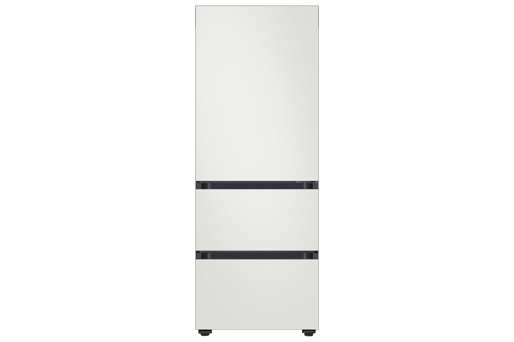
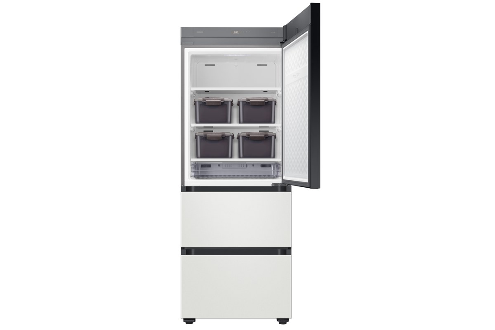
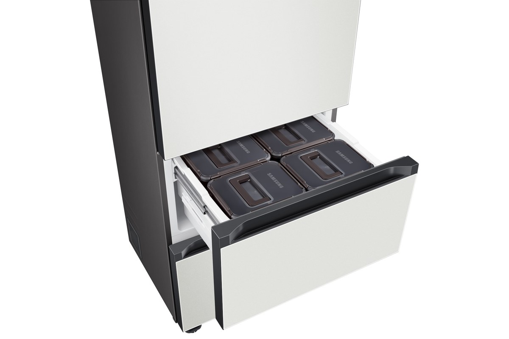
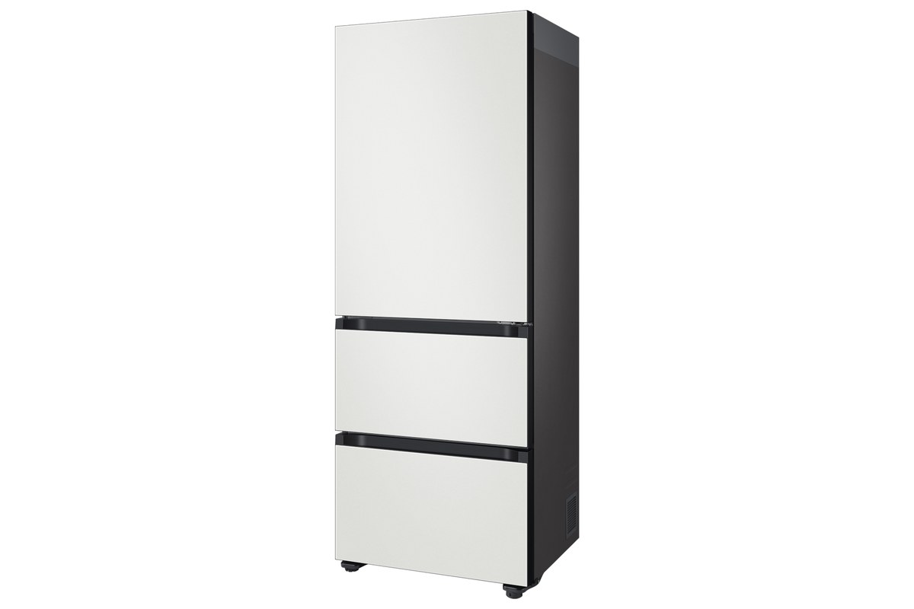
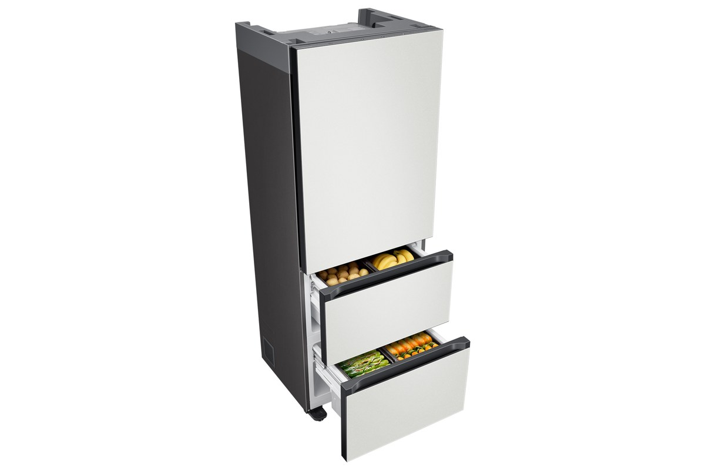

Samsung Bespoke Kitchen Fit Kimchi Fridge RQ33DB74C1AP Review: Overview
This Samsung Bespoke Kitchen Fit kimchi fridge review covers the RQ33DB74C1AP, a 313-litre, 3-door Korean kimchi refrigerator in Cotta White. Samsung calls it the Bespoke Kimchi Plus 3-door Kitchen Fit. Each compartment has its own cooling and modes, it has a Korean energy grade 1 rating, and it is sized to sit flush in a 700 mm-deep cabinet line.
The Samsung partner store on Naver Shopping Connect that we checked listed it at 1,625,000 KRW, with a promoted benefit price of about 1.28 million KRW after discounts. A Korean price-comparison site showed a lowest price of 1,579,000 KRW on November 23, 2026. On Samsung Korea's store it had a 4.9 / 5 rating from about 300 owner reviews when we checked. We checked the specs against Samsung Korea's product, support and installation pages. We did not test it in our own kitchen.
"A tidy, efficient kimchi fridge that also works as a second fridge or freezer. It is built for Korean kitchens and Korean voltage."

Three Compartments, Three Sets of Modes
The total 313 L is split into a 162 L top compartment behind a door, and two drawers below: 88 L in the middle and 63 L at the bottom. The drawers run on three-stage rails, and each compartment can be switched off on its own when you don't need it.
All three compartments have kimchi storage (strong, standard and mild) and a low-salt kimchi mode. The middle and bottom add crunchy kimchi and store-bought kimchi modes. For fermenting, the top and middle compartments have low-temperature and room-temperature ripening, and the bottom drawer has dongchimi (radish water kimchi) and kkakdugi (cubed radish kimchi) ripening.
It is not only for kimchi. The top compartment can run as a fridge or a freezer. The middle drawer has meat and fish, aged meat, fruit and vegetable, and grain modes. The bottom drawer has fruit and vegetable, drinks, wine, and potato and banana modes.


Cooling, Filters and Smart Features
Each compartment is cooled separately by a digital inverter compressor. Samsung says its ultra-fine temperature control keeps swings to about ±0.3 °C, against ±1.5 °C on one of its ordinary fridges, in its own tests at 25 °C and 60% humidity. Steady temperatures are what keep kimchi crisp and stop it going sour too fast.
There is a deodorising filter in each compartment to cut smells and ethylene gas from fruit. Samsung suggests replacing it about once a year; a set of three (RA-K34FAA) costs 30,000 KRW from Samsung Korea. The display is hidden in the door, and the fridge connects to Wi-Fi and the SmartThings app.
Design, Size and Kitchen Fit Installation
The Cotta White Bespoke door panels have horizontal handles. The fridge is 695 × 1,853 × 600 mm and weighs 111 kg. "Kitchen Fit" means it is made to line up with a 700 mm-deep fridge cabinet, so it can look built-in next to a Samsung Kitchen Fit main fridge.
Samsung's installation guide asks for a cabinet at least 1,900 mm high and 700 mm deep (720 mm if there is a socket behind it), with at least 12 mm of space on each side. Measure your cabinet and doorways before ordering.


Key Specs
| Spec | Samsung Bespoke Kimchi Plus 3-Door Kitchen Fit RQ33DB74C1AP |
|---|---|
| Type | Kitchen Fit kimchi refrigerator, 3 doors (top door + 2 drawers) |
| Capacity | 313 L: top 162 L, middle 88 L, bottom 63 L |
| Kimchi containers | 10 (4 / 4 / 2), 104.8 L in total |
| Size (W × H × D) | 695 × 1,853 × 600 mm |
| Weight | 111 kg |
| Energy | Korean grade 1; 11.5 kWh per month (30.5 kWh per month when used as a freezer) |
| Power | 220 V / 60 Hz |
| Compressor / cooling | Digital inverter compressor; separate cooling for each compartment |
| Refrigerant | R600a |
| Deodorising | Filter in each compartment (RA-K34FAA, about yearly) |
| Display | Hidden simple display |
| Smart features | Wi-Fi, SmartThings app |
| Colour | Cotta White Bespoke panels; horizontal handles |
| Korean price | 1,625,000 KRW at a Samsung partner Naver store; lowest 1,579,000 KRW on a price-comparison site (Nov 23, 2026) |
Specs come from Samsung Korea's RQ33DB74C1AP product, support and installation pages; prices were checked in November 2026. Temperature figures are Samsung's own claims, and we did not test the fridge ourselves.
How It Compares
| Kimchi Plus 3-Door Kitchen Fit RQ33DB74C1AP (this) | Kimchi Plus 4-Door Kitchen Fit RK80F49C1W | Bespoke AI 4-Door fridge RM70F90M1ZD | |
|---|---|---|---|
| Type | Kimchi fridge | Kimchi fridge | Main family fridge |
| Capacity | 313 L | 487 L | 902 L |
| Width | 695 mm | Wider 4-door body | 912 mm |
| Kitchen Fit (700 mm cabinet line) | Yes | Yes | No (freestanding) |
| Best for | Small and mid-size families, or a narrow spot | Families who make a lot of kimchi | The main fridge, not kimchi storage |
Pros & Cons
| Pros | Cons |
|---|---|
| Three separately cooled compartments, each switchable off | Korean 220 V model; not for U.S. use |
| Kimchi, fermenting, fridge, freezer, meat and wine modes | Needs a cabinet at least 1,900 mm high and 700 mm deep for the built-in look |
| Korean energy grade 1 (11.5 kWh per month) | 313 L is small for families who make a big kimjang batch |
| Ten see-through kimchi containers included | Filters should be replaced about once a year |
| 4.9 / 5 from about 300 reviews on Samsung Korea | No door bins in the top compartment |
Who It Suits (and Who Should Skip It)
- Yes: Korean homes that want kimchi kept crisp and away from the main fridge.
- Yes: Couples and small families who need a flexible second fridge or freezer.
- Yes: Kitchens with a 700 mm-deep cabinet line that want a built-in look.
- No: Big families who make large kimjang batches; look at 4-door models.
- No: Buyers outside Korea; choose a kimchi fridge sold for your country's voltage.
Samsung Kimchi Fridge RQ33DB74C1AP FAQ
What is the Samsung RQ33DB74C1AP?
It is Samsung's Korean-market Bespoke Kimchi Plus 3-door Kitchen Fit kimchi refrigerator, 313 L, in Cotta White. Each of the three compartments has its own cooling and its own modes, so it works as a kimchi fridge, an extra fridge and even a small freezer. It has a Korean energy efficiency grade 1.
What is a kimchi refrigerator, and why do Korean homes have one?
A kimchi refrigerator keeps kimchi at very steady, slightly colder temperatures than a normal fridge, and can also ferment it. That keeps kimchi crisp for months after the autumn kimjang season and keeps its smell away from other food. Most Korean homes have one next to the main fridge, and many use it for fruit, meat, rice and drinks too.
Will it fit my kitchen?
Samsung lists it at 695 mm wide, 1,853 mm tall and 600 mm deep, and 111 kg. It is a Kitchen Fit model, made to sit flush in a 700 mm-deep fridge cabinet line. Samsung's installation guide asks for a cabinet at least 1,900 mm high and 700 mm deep (720 mm if there is a socket behind it), and at least 12 mm of space at each side.
How many kimchi containers does it come with?
Ten: four in the top compartment, four in the middle and two in the bottom, 104.8 L in total. Samsung says the semi-transparent containers are made from PP, the same plastic used for baby bottles, so you can see what is inside without opening them.
Can I use the Korean RQ33DB74C1AP in the U.S.?
We don't recommend it. It is a 220 V / 60 Hz Korean model with a Korean warranty and service network. Samsung and other brands sell kimchi refrigerators in the U.S. under different model numbers, so the Amazon button on this page searches for those.
Kimchi Refrigerators
The Korean RQ33DB74C1AP is sold through Korean retailers. Kimchi refrigerators for U.S. homes are sold under different model numbers; compare current listings on Amazon.